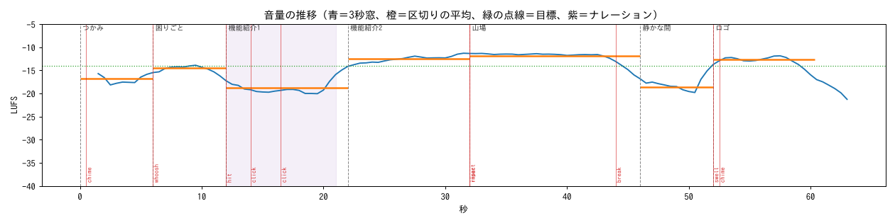
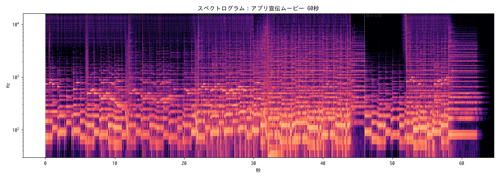
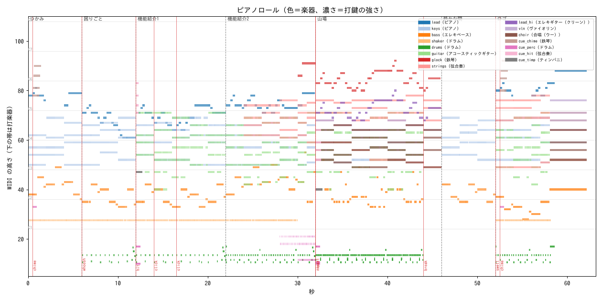
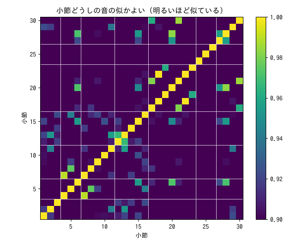

| 区切り | 秒 | 勢い | LUFS | 音/秒 | 明るさ(Hz) | 広がり | 調 | 足した楽器 | 抜いた楽器 |
|---|---|---|---|---|---|---|---|---|---|
| つかみ（intro） | 0.0–6.0 | 0.35 | -16.7 | 15.2 | 3448 | 0.164 | D major | - | - |
| 困りごと（verse） | 6.0–12.0 | 0.40 | -14.4 | 20.5 | 2827 | 0.161 | D major | drums | - |
| 機能紹介1（verse） | 12.0–22.0 | 0.50 | -18.7 | 34.6 | 2880 | 0.198 | D major | guitar | - |
| 機能紹介2（build） | 22.0–32.0 | 0.68 | -12.5 | 43.6 | 3240 | 0.206 | D major | glock, strings | - |
| 山場（chorus） | 32.0–46.0 | 0.92 | -11.9 | 41.9 | 2924 | 0.266 | E major | choir, lead_hi, vln | lead, shaker |
| 静かな間（break） | 46.0–52.0 | 0.30 | -18.6 | 6.0 | 3108 | 0.115 | E major | - | choir, drums, glock, guitar, lead_hi, strings, vln |
| ロゴ（outro） | 52.0–60.3 | 0.70 | -12.7 | 34.5 | 3210 | 0.212 | E major | choir, drums, guitar, lead, shaker, strings, vln | - |
帯域のバランス（エネルギーの割合）：低音 〜120Hz 31.6%、中低 120〜500 42.5%、中 500〜2k 22.4%、中高 2k〜6k 2.8%、高 6k〜 0.7%



| 楽器 | 役 | 最低 | 中央 | 最高 | 音の数 | 音域の外 |
|---|---|---|---|---|---|---|
| ピアノ（lead） | melody | C#4 | D5 | E6 | 75 | 0 |
| ピアノ（keys） | comp | D3 | C#4 | A4 | 424 | 0 |
| エレキベース（bass） | bass | E1 | D2 | G3 | 141 | 0 |
| アコースティックギター（guitar） | comp | E2 | A3 | B4 | 486 | 0 |
| 鉄琴（glock） | double | G#5 | C6 | G#6 | 34 | 0 |
| 弦合奏（strings） | pad | C#3 | A4 | F#5 | 68 | 0 |
| エレキギター（クリーン）（lead_hi） | melody | G#4 | B4 | G#5 | 32 | 0 |
| ヴァイオリン（vln） | counter | E4 | F#4 | E5 | 11 | 0 |
| 合唱（ウー）（choir） | pad | C#3 | A#3 | F#4 | 32 | 0 |
| 鉄琴（cue_chime） | cue | F#5 | C#6 | G#6 | 8 | 0 |
| 弦合奏（cue_hit） | cue | E2 | C#4 | B5 | 10 | 0 |
| ティンパニ（cue_timp） | cue | E2 | G2 | B2 | 2 | 0 |
設計した和音の種類 12。MIDI から推定した和音との一致 100%、書き出した音から推定した和音との一致 97%（音からの推定は根音が合えば一致とみなす）。
| 秒 | 区切り | 設計 | 記号 | MIDI | 音 |
|---|---|---|---|---|---|
| 0.0 | つかみ | D | I | D | D |
| 2.0 | つかみ | F#m | iii | F#m | F#m |
| 4.0 | つかみ | G | IV | G | G |
| 6.0 | 困りごと | Bm | vi | Bm | Bm |
| 8.0 | 困りごと | Em | ii | Em | Em |
| 10.0 | 困りごと | A | V | A | Asus4 |
| 12.0 | 機能紹介1 | Bm | vi | Bm | Bm |
| 14.0 | 機能紹介1 | Em | ii | Em | Em |
| 16.0 | 機能紹介1 | A | V | A | A7 |
| 18.0 | 機能紹介1 | D | I | D | D |
| 20.0 | 機能紹介1 | Bm | vi | Bm | Bm |
| 22.0 | 機能紹介2 | D | I | D | D |
| 24.0 | 機能紹介2 | D/F# | I/3 | Dmaj7 | F#m7 ✗ |
| 26.0 | 機能紹介2 | G | IV | G | G |
| 28.0 | 機能紹介2 | A | V | A | Amaj7 |
| 30.0 | 機能紹介2 | G | IV | G | G |
| 31.0 | 機能紹介2 | B7 | V7 | B7 | B7 |
| 32.0 | 山場 | E | I | E | E |
| 34.0 | 山場 | B | V | B | B |
| 36.0 | 山場 | C#m | vi | C#m | C#m |
| 38.0 | 山場 | A | IV | A | Amaj7 |
| 40.0 | 山場 | E | I | E | E |
| 42.0 | 山場 | B | V | B | B |
| 44.0 | 山場 | C#m | vi | C#m | C#m7 |
| 46.0 | 静かな間 | F#m | ii | F#m | F#m |
| 48.0 | 静かな間 | B | V | B | B |
| 50.0 | 静かな間 | E | I | E7 | E |
| 52.0 | ロゴ | C#m | vi | C#m | C#m |
| 54.0 | ロゴ | A | IV | A | Amaj7 |
| 56.0 | ロゴ | F#m7 | ii7 | F#m7 | F#m7 |
| 57.0 | ロゴ | B7 | V7 | B7 | B7 |
| 58.0 | ロゴ | E | I | E | E |
全 30 小節のうち、中身の違う小節 30。全楽器が同じ小節の組 0、そのうち連続 0。音の特徴がほぼ同じ（0.998 超）の組 1。

最大値に張りついたサンプル 0、サンプルのピーク -1.28 dBFS、真のピーク -1.05 dBTP。
| 楽器 | 役 | 強さ 平均／最大 | 音のあいだが空く割合 | ペダル | ベースの同音連打 |
|---|---|---|---|---|---|
| lead | melody | 74.9／89 | 0% | 32 | - |
| keys | comp | 64.8／88 | - | 32 | - |
| bass | bass | 72.9／92 | - | - | 3 |
| guitar | comp | 58.7／88 | - | - | - |
| glock | double | 68.2／78 | 0% | - | - |
| strings | pad | 70.5／82 | - | - | - |
| lead_hi | melody | 87.4／95 | 0% | - | - |
| vln | counter | 93.1／104 | 0% | - | - |
| choir | pad | 75.2／86 | - | - | - |
2.5kHz 以上の割合 2.7%（目安 5% 以下）。判定：目安の範囲
| 秒 | 種類 | 効き | メモ |
|---|---|---|---|
| 0.50 | chime | 立ち上がり 2.45（周りの拍頭=1、ずれ -9ms） | アプリのアイコンが出る |
| 6.00 | whoosh | 立ち上がり 1.48（周りの拍頭=1、ずれ +16ms） | 画面が横に流れる |
| 12.00 | hit | 立ち上がり 2.03（周りの拍頭=1、ずれ +11ms） | 機能紹介のタイトル |
| 14.00 | click | 立ち上がり 3.41（周りの拍頭=1、ずれ -5ms） | ボタンを押す |
| 16.50 | click | 立ち上がり 1.52（周りの拍頭=1、ずれ +12ms） | 2回目のタップ |
| 32.00 | riser | 高域 +6.8 dB の上昇 | 山場への溜め（28〜32秒、at は溜めの終わり） |
| 32.00 | impact | 立ち上がり 1.83（周りの拍頭=1、ずれ +0ms） | 山場の頭 |
| 44.00 | break | -6.7 dB | 拍を落とす（44〜46秒） |
| 52.00 | swell | 高域 +25.7 dB の上昇 | ロゴへ |
| 52.50 | chime | 立ち上がり 3.19（周りの拍頭=1、ずれ +1ms） | ロゴが光る |